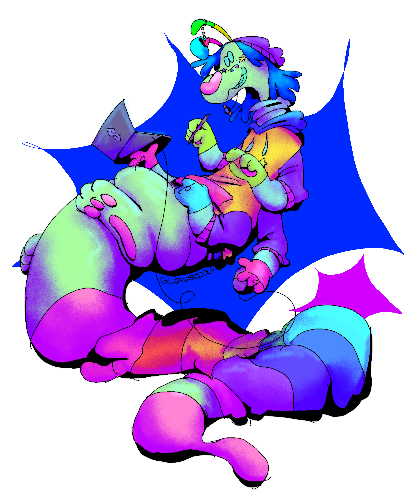
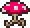

Info-
- Name: Glowstick "Oddity" Greeble
- Age: 20
- Pronouns: He/She + Boom/Bang and Skabop/Debop
- Honorifics: Mz./Mzr. (Pronounced Mizz/Mizzer)
- CERTIFIED CRYPTO HATER 372385123519347 DEAD CRYPTOBROS
Enjoys-
- Web design
- Rhythm Games
- 3D modelling
- Sewing/Costuming
- Antiquing/Thrifting
- This:

Dislikes-
- MARK ZUCKERBURG
- NFTs/Crypto/Web3
- Flat art
- Photorealism in CGI
- Minimalism
- Social media
Favorites-
- Book series: The Hitchhiker's Guide to the Galaxy
- Movie (good): Chicago
- Movie (bad): Galaxy Quest
- Anime: Fullmetal Alchemist: Brotherhood
- TV Show: Severance
- Podcast: Wolf 359
- Album: Pink Lemonade - Closure in Moscow
- Video Game: Portal 2
- Genre: Sci-fi (crazy i know)
- Vocaloid: Adachi Rei OR Teto
- Vocaloid producer: tie between Pinnochio-P and MARETU
- Color: Green
- Food: Chicken pot pie
- Onion: tie between garlic (versatile) and leek (MVP of soup)
- Mammal: ANTEATERS!!!!
- Bug: The Humble Fruit Beetle
Super Secret Kin's List-
- 90% of my ocs
- Zaphod (H2G2 books)
- that's fucking IT. ❤